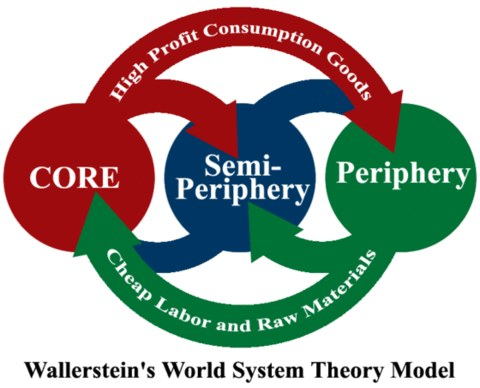
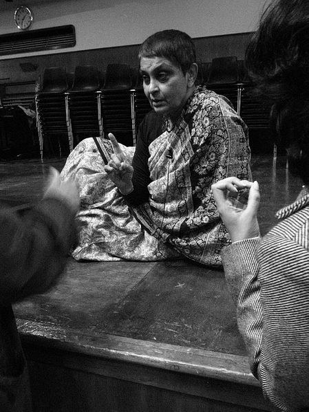

Welcome

CMLIT 503 Restless Theories of the Rest

Restless Theories
CMLIT 503:002
Restless Theories of the Rest
Jonathan E. Abel
Feb 17- Mar 24.
M 2:30 PM - 5:30 PM
Basement mystery room, Sparks
Office Hours: 10-12 Mondays in Kern Cafe
In recent years, it has become something of a commonplace that theory is formed in the West and applied to the Rest. This short seminar will examine this pernicious notion that theory necessitates a Western, male discourse.
Topics to be broached are: theory as a genre; the place of postcolonial theory; the time of ancient poetics; the role of a worldly critic in the world.
Readings may include work by Said, Achebe, Karatani, Johnson, Fuss, Kristeva, Spivak, Butler, Chow.